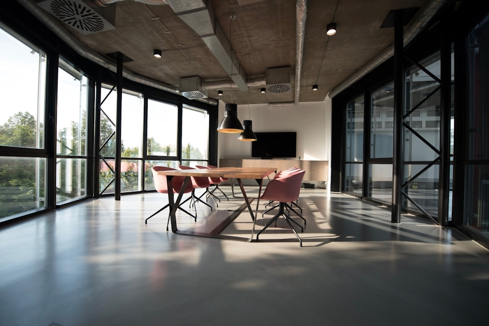

공간의 가능성을 발견합니다
Spaces.
With purpose.
우리는 건물 너머의 가능성을 봅니다.
입지와 시설, 매일의 운영을 세심하게 살펴
공간이 가진 가치를 오래 이어갑니다.
VISION
공간의 본질을 이해하는
세심한 자산관리
사람의 일상에서 출발하는
더 나은 공간 경험
경험과 기술을 연결하는
지속가능한 운영
OUR PERSPECTIVE
공간의 가능성을 발견합니다
우리는 건물 너머의 가능성을 봅니다.
입지와 시설, 매일의 운영을 세심하게 살펴
공간이 가진 가치를 오래 이어갑니다.

모든 공간의 중심에는 사람이 있습니다
우리는 그곳에서 보내는 하루를 생각합니다.
일하고, 만나고, 머무는 모든 순간에 귀 기울여
다시 찾고 싶은 공간을 만들어갑니다.

경험에 기술을 더해 내일을 준비합니다
흩어진 정보는 연결하고, 반복 업무는 간결하게.
현장의 경험과 데이터를 함께 살펴
더 명확한 판단과 안정적인 운영을 돕습니다.
EVERY SPACE MATTERS
서로 다른 공간에도 변하지 않는 기준이 있습니다.
그 안의 사람을 이해하고, 오늘보다 나은 내일을 준비하는 것.
SPS는 공간의 쓰임에 맞는 관리의 방향을 찾습니다.
집중과 협업이 자연스럽게 이어지는 업무 공간. 시설의 안정적인 운영부터 임차인의 작은 요청까지 살펴, 일하기 좋은 환경을 만듭니다.

사람과 브랜드가 만나는 상업 공간. 방문자의 동선과 공용부의 쾌적함, 임대 운영의 흐름을 연결해 오래 사랑받는 공간을 지향합니다.
건물의 가치는 매일의 관리에서 시작됩니다. 점검과 보수, 계약과 일정, 수입과 지출을 일관된 기준으로 살피며 자산의 현재를 명확하게 합니다.

다양한 일상이 함께하는 복합 공간. 서로 다른 사용자의 필요를 이해하고, 공간별 운영과 공통 관리의 균형을 맞춰 지속되는 가치를 만듭니다.
COMPANY DOCUMENTS · 등록·면허 자료
주식회사 신의프라퍼티솔루션의 사업자등록 정보와 업무 관련 면허를 확인하실 수 있도록 공개 자료를 준비하고 있습니다.
주식회사 신의프라퍼티솔루션
면허명과 업무 적용 범위를 확인한 뒤 안내합니다.